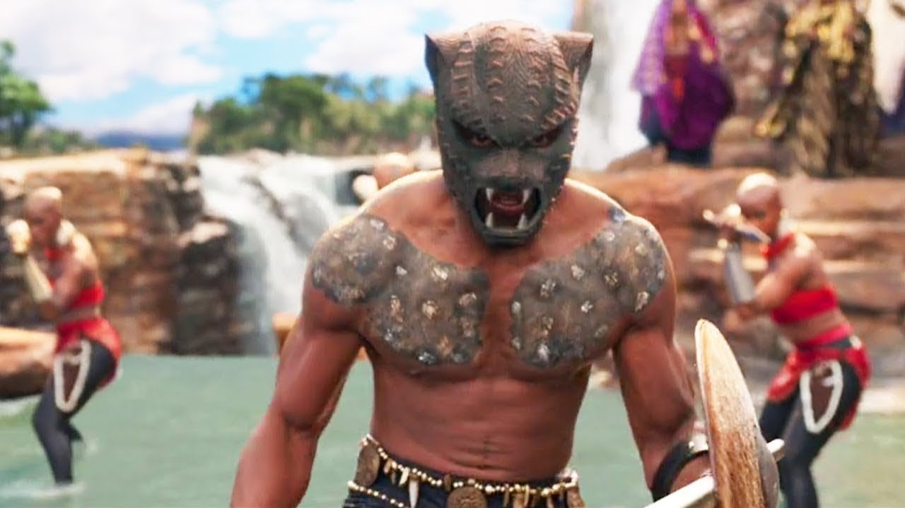

T'Challa faz parte de uma linhagem de guerreiros Panteras Negras. Seu pai, o rei T'Chaka, foi assassinado recentemente, e agora T'Challa deve assumir o trono de Wakanda.
Para isso, nosso herói precisa passar pela cerimônia de coroamento, durante a qual membros dos outros povos de Wakanda podem desafiá-lo para um combate.
A cerimônia acontece de forma tranquila, até que o líder de um dos grupos étnicos aparece de repente e desafia o príncipe.
Qual o nome desse líder e do povo que desafia T'Challa?
- Okoye, líder dos Achipawa
- Okoye, líder dos Igbo
- M'Baku, líder dos Jabari
- M'Baku, líder dos Janjo
